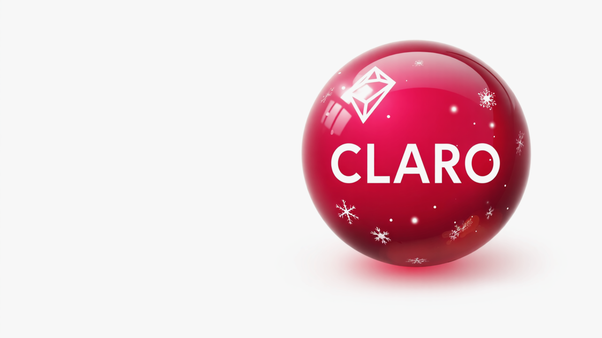
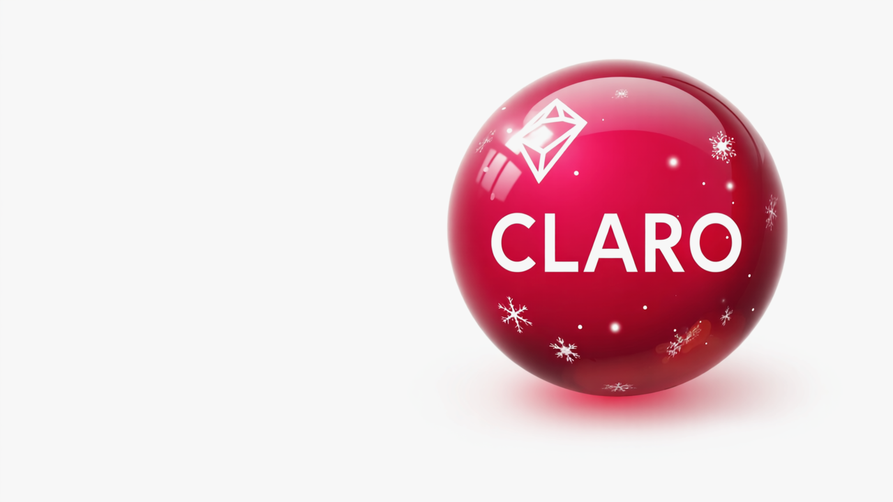
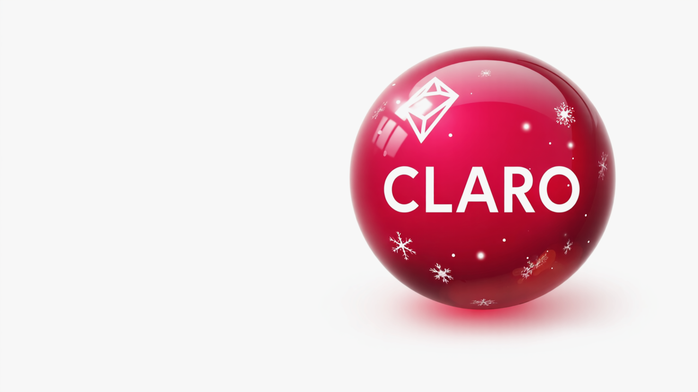

Consulta de 2ª Via Claro
Emita sua fatura atualizada em segundos
 


Emita sua fatura atualizada em segundos

Simples, rápido e seguro
Tire suas dúvidas sobre a segunda via
A compensação via Pix ocorre na hora, 24h por dia, inclusive feriados.
Boleto pode levar até 3 dias úteis. Já cartão é compensado imediatamente.
Não. Basta informar seu CPF ou CNPJ para gerar a segunda via.
Sim, mas o site é mais rápido e permite gerar a fatura sem login.
O comprovante aparece na mesma hora após o pagamento.
Não. A emissão da fatura não possui cobrança extra.
Para suporte, clique no botão abaixo:
WhatsApp